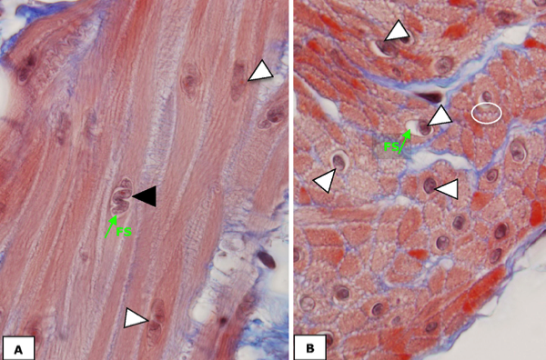

Glad spierweefsel:
Bij ‘gladde’ spiercellen is de organisatie van myofilamenten minder sterk geordend zodat geen strepenpatroon ontstaat en het spiercelcytoplasma (= sarcoplasma) een ‘glad’ uitzicht heeft. Elke individuele gladde spiercel is spoelvormig (fusiform), wat wil zeggen dat ze langwerpig zijn, breed zijn in het midden en spitse uiteinden hebben. Omdat ze embryonaal ontstaan uit één enkele myoblast bezitten ze slechts 1 kern, welke zich centraal in de cel bevindt.
Bij ‘gladde’ spiercellen is de organisatie van myofilamenten minder sterk geordend zodat geen strepenpatroon ontstaat en het spiercelcytoplasma (= sarcoplasma) een ‘glad’ uitzicht heeft. Elke individuele gladde spiercel is spoelvormig (fusiform), wat wil zeggen dat ze langwerpig zijn, breed zijn in het midden en spitse uiteinden hebben. Omdat ze embryonaal ontstaan uit één enkele myoblast bezitten ze slechts 1 kern, welke zich centraal in de cel bevindt.

Beelden van een overlangse (A) en dwarse (B) doorsnede van gladde spiercellen. De cellen hebben 1 kern (pijlpunten) die centraal ligt in de cel en omringd is door filamentenvrij sarcoplasma (FS). Elke cel is omgeven door endomysium.
(A) Op overlangse doorsnede zie je de spoelvorm van de cellen. In deze doorsnede is de kern soms ‘kurkentrekkervormig’ (zwarte pijlpunt) te zien als gevolg van contractie van de spiercel tijdens fixatie.
(B) Bij een dwarse doorsnede valt op dat de diameter sterk kan verschillen en dat sommige cellen door de kern zijn aangesneden en andere niet. Dit is een gevolg van de spoelvorm van de cellen en de centrale ligging van de kernen. Merk op dat de gladde spiercellen op deze afbeelding korte ‘uitsteeksels’ vertonen (omcirkeld). Op deze plaatsen zijn de gladde spiercellen met elkaar verbonden.
(A) Op overlangse doorsnede zie je de spoelvorm van de cellen. In deze doorsnede is de kern soms ‘kurkentrekkervormig’ (zwarte pijlpunt) te zien als gevolg van contractie van de spiercel tijdens fixatie.
(B) Bij een dwarse doorsnede valt op dat de diameter sterk kan verschillen en dat sommige cellen door de kern zijn aangesneden en andere niet. Dit is een gevolg van de spoelvorm van de cellen en de centrale ligging van de kernen. Merk op dat de gladde spiercellen op deze afbeelding korte ‘uitsteeksels’ vertonen (omcirkeld). Op deze plaatsen zijn de gladde spiercellen met elkaar verbonden.
Glad spierweefsel vind je terug in de wand van bijna alle inwendige organen. De meeste van deze organen zijn in feite holle buizen, waarbij de gladde spieren ervoor moeten zorgen dat brokjes, vloeistof of gassen worden voortgestuwd of net worden tegengehouden en/of de druk en weerstand binnen het systeem bepalen. Gladde spiercellen liggen dan ook meestal in dezelfde richting georiënteerd in een bundel of laag. In sommige gevallen communiceren gladde spiercellen met elkaar via ‘gap junctions’.
Rondom elke spiercel ligt een dun laagje bindweefsel dat het endomysium wordt genoemd.
Vordering zelfstudie spierweefsel: